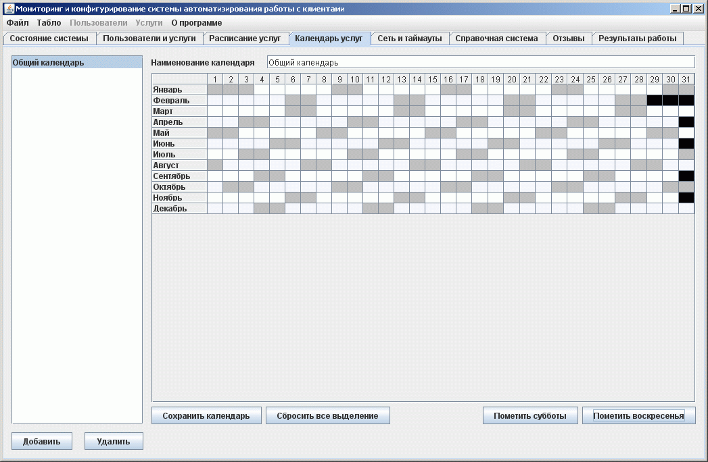

Ведение рабочих календарей услуг
На этой закладке формируются рабочие календари услуг в организации. В списке всегда имеется календарь "Общий календарь", он влияет на работу всех услуг и всегда.

В левой части расположен список возможных рабочих календарей для услуг. Можно добавлять новые или удалять старые календари. Размер справочника не ограничен.
Справа расположена детальная информация по выбраному рабочему календарю. Можно изменить назмание календаря. Редактирование набора рабочих и нерабочих дней осуществляется мышью. Для удобства выделения выходных дней предусмотрены специальные кнопки под редактором. Также можно быстро произвести очистку всего календаря нажав кнопку "Сбросить выделение". Сохранять изменение в колендаре необходимо нажатием кнопки "Сохранить календарь".
ВНИМАНИЕ! Редактировать содержимого календаря можно только при условии что список календарей уже сохранен. Если после редактирования содержимого календаря вы не произведете его сохранение кнопкой "Сохранить календарь", то все изменения пропадут.